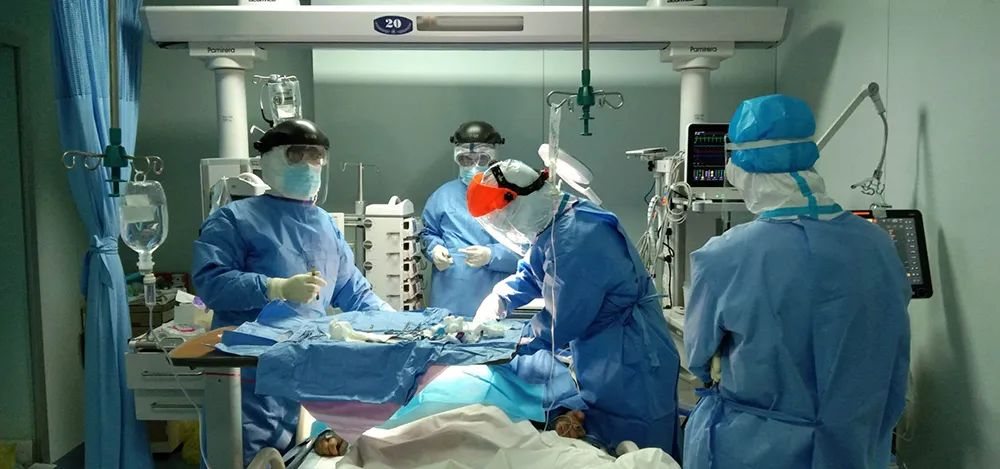

特稿|只因没染上新冠，他们一再错过最佳治疗期
原文链接 备份链接 【财新网】（记者 马丹萌 实习记者 何京蔚）49岁的武汉人李平（化名）已经昏迷了一个月，先后辗转三家医院，却迟迟没有得到脑外科医生的有效救治。 62岁的赵康（化名）年前因为肾结石在武汉市第一医院做了输尿管内的支架引流管 …
澎湃新闻记者 朱轩 通讯员 杜巍巍 邹亚琴
“下手术刀后，胸腔气流会携带着新冠病毒喷出。医生首先需要切开甲状软骨下缘，暴露气管；再切开气管前壁，迅速插入气管套管，将硅胶内管从套管植入并固定，接上呼吸机……”这一系列精准操作需要在15分钟内完成。“65，80，97”，床边监护仪上的动脉血氧饱和度迅速飙升，患者生命体征重回稳定。
这是武汉大学人民医院东院区医生为新冠肺炎危重患者做气管切开手术时的场景。

武汉大学人民医院东院区“气切小分队”正在为患者进行气管切开手术 来源：武汉大学人民医院东院区
澎湃新闻（www.thepaper.cn）2月28日从武汉大学人民医院东院区获悉，28日下午，在与死神的“抢人”大战中，该院耳鼻喉科主任朱霆带领的3人党员“气切小分队”（新冠肺炎患者气管切开手术小分队）又一次获得了胜利。截至2月28日，“气切小分队”已完成了5例针对新冠肺炎危重症患者的气管切开手术。
据介绍，对于已进行气管插管的新冠肺炎危重症患者来说，如果7-10天内不能拔管，就需要做气管切开手术。而手术时，大量分泌物气溶胶会喷出，患者肺内沉积的病毒颗粒也会直接暴露在空气中。稍有不慎，对于医护人员来说都是致命威胁。
每次手术前，“气切小分队”的成员们都要做好三级防护，2层防护服、N95口罩、护目镜、脚套……与其他同事不一样的是，他们还要戴上正压头套，同时戴上4层手套。

武汉大学人民医院东院区“气切小分队”正在为患者进行气管切开手术 来源：武汉大学人民医院东院区
气管切开对主刀医生的视觉与触觉要求很高。头套上的水蒸气会阻碍术者的视野；双手戴的4层手套，让执刀的手指几乎感觉不到任何东西。在视觉与触觉双重“失灵”的情况下，每一次手术，朱霆和队友几乎都全凭经验完成。
2月20日，东院区耳鼻喉科接到重症医学科的紧急求助电话。一位70岁新冠肺炎危重症患者气管插管后，血氧饱和度只有60%，亟需气管切开。“必须尽快进行气管切开，否则患者很快会因为呼吸衰竭而亡。”重症医学科主任周晨亮与驰援的华西医院重症医学科主任康焰讨论后，决定请“气切小分队”操刀进行气管切开。
朱霆带着“气切小分队”成员丁永军、邓智锋换好防护服，第一时间带上气切包赶到了重症医学科病房，与在病房支援的新疆医疗队重症组组长杨建中携手上台。摆体位、铺治疗巾、评估、麻醉、气管切开……一系列精密经皮气管切手术操作、重新连上呼吸机后，患者气道风险降低，舒适度立马改善。而“气切小分队”的所有人，全身已被汗水浸透。
朱霆表示，对于危重症新冠肺炎患者的抢救，气管切开具有良好的辅助治疗效果。“降低危重症新冠肺炎患者的死亡率，需要多个学科共同协作，党员医生更要冲锋在前。只要患者有需要，我们‘气切小分队’一定使命必达！”
本期编辑 常琛
推荐阅读


原文链接 备份链接 【财新网】（记者 马丹萌 实习记者 何京蔚）49岁的武汉人李平（化名）已经昏迷了一个月，先后辗转三家医院，却迟迟没有得到脑外科医生的有效救治。 62岁的赵康（化名）年前因为肾结石在武汉市第一医院做了输尿管内的支架引流管 …
原文链接 备份链接 【财新网】（记者 马丹萌 实习记者 何京蔚）49岁的武汉人李平（化名）已经昏迷了一个月，先后辗转三家医院，却迟迟没有得到脑外科医生的有效救治。 62岁的赵康（化名）年前因为肾结石在武汉市第一医院做了输尿管内的支架引流管 …
原文链接 备份链接 图片来源：图虫创意 记者：陈鑫 “ ‘超长潜伏期’的患者只是个例，本身就没有考虑偏差，不足以成为判定最长潜伏期的依据。” ” 关于“新冠病毒潜伏期最长24天”的话题，钟南山团队在最新公布的论文中指出，单纯根据最小、最大 …
原文链接 备份链接 我们医护人员只是整个事件的一个环节，降低死亡率、提升治愈率，靠的是国家总体布局，靠的是全体人民的共同参与。 文 | 杨跃杰（郑州市第六人民医院重症隔离病区主任） 1月25日，我进入“新冠”隔离病区，历时一个多月。其 …
原文链接 备份链接 澎湃新闻记者 贺梨萍 当地时间2月28日，由国家卫健委高级别专家组组长、中国工程院院士钟南山领衔的“中国2019新型冠状病毒疾病的临床特征”研究论文在顶级医学期刊《新英格兰医学杂志》（NEJM）上在线公开发表。该研究纳 …